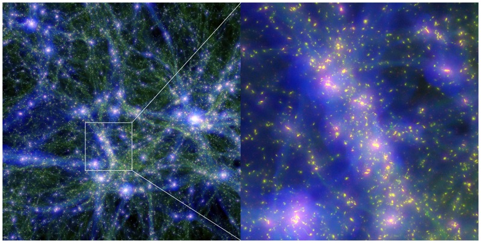

Research
My research activity for the last 20 years at CNRS
has focused on gravitational dynamics, with a special emphasis on the
dynamical measurements of dark matter. What's its geometrical
distribution ? How does it influence the structural and dynamical
evolution of the environment ? I have in particular
analysed the instability mechanisms which drives the evolution of self-gravitating systems. This investigation has led me to explore various
topics such as the dymamics of the large scale structure the
intergalactic and interstellar media, the dynamics of galaxies and
black holes. I have also acquired some knowledge on inverse methods
numerical simulations (N-body, hydrodynamical). More recently, my interest shifted towards the emergence
of self-regulated discs driven by wakes. This regulation could responsible for disc resilience & the tightness of observed scaling laws (Tully-Fisher, radial acceleration relations, etc.).
As a theoretician I have always had as a priority to connect measurements
with the underlying physical process, relying on extensive mathematical descriptions.
Recherche
Globalement, mon activité de recherche de ces vingt
dernières années au CNRS s’articule autour de la dynamique
gravitationnelle, avec pour point saillant la détermination dynamique
de la matière noire. Quelle est sa distribution géométrique?
Comment peut-elle influencer l’évolution structurelle et
dynamique de son environnement ? J’ai en particulier étudié
la physique des mécanismes d’instabilité appliquée aux
systèmes complexes que sont les objets autogravitants. Cette physique
m’a permis de m’intéresser à des sujets aussi divers
que la dynamique des grandes structures de l’univers, le
milieu intergalactique et interstellaire, la dynamique des galaxies et
leurs trous noirs. L’acquisition des méthodes inverses
utilisées dans ce contexte m’a amené à aborder
d’autres problèmes connexes de l’astrophysique. La
maîtrise des simulations numériques (hydrodynamique, N-corps) a
constitué un autre axe de développement.
Plus récemment, mon intérêt s'est porté sur l'émergence de disques autorégulés entraînés par des sillages.
de disques auto-régulés entraînés par des sillages. Cette régulation pourrait être à l'origine de la résilience des disques et de la rigueur des lois d'échelle observées (Tully-Fisher, relations d'accélération radiale, etc.). En tant que théoricien,
mon souci a toujours été de faire le lien entre la mesure
d’une part, et la physique du
mécanisme qui sous-tend
le phénomène observé d’autre part, et ce par le biais
d’une description physique et mathématique détaillée de ce
phénomène.
{kind=link}